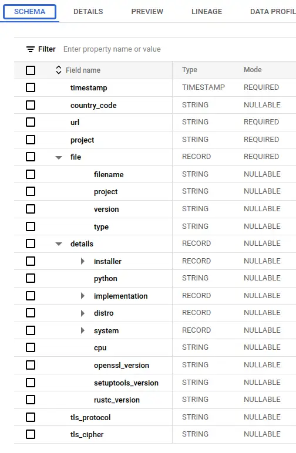
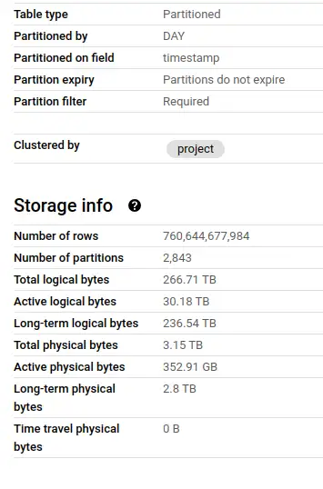
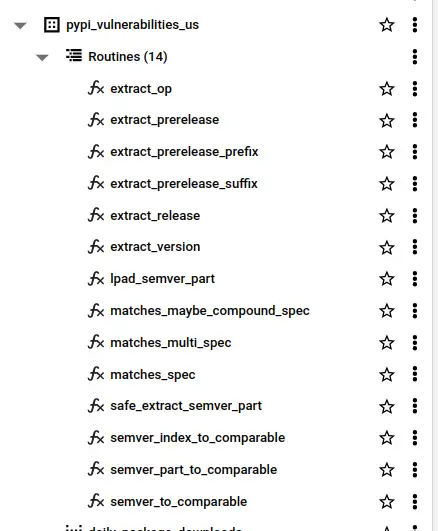
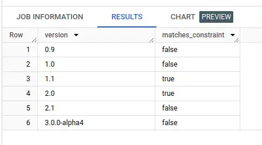
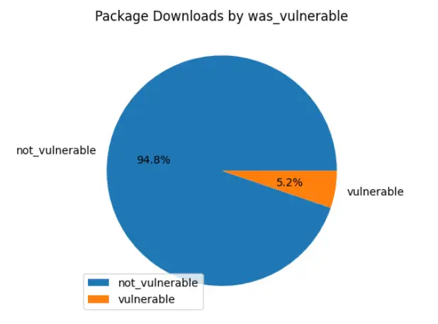

Analysing PyPI Downloads
Investigating Python package downloads with the public PyPI downloads dataset and Safety public database. This post covers how I've prepared and published the data to support this kind of analysis, including pure SQL functions to process Semver versions and constraints at scale. This is part of a broader investigation into vulnerability management and update behaviour.
- Thanks to
 for supporting this content.
for supporting this content.
PyPI BigQuery Dataset¶
The Python Packaging Authority publishes package download data to BigQuery (PyPI documentation, Google blog post). This public dataset seemed like a natural place to start in understanding how packages are used out there in the real world.
There are three tables in the dataset, one of which represents actual package downloads, bigquery-public-data.pypi.file_downloads. The Python Packaging User Guide produces some useful documentation about this table here. Let's take a look at what we're dealing with.




So this table has a complex schema, and is huge - 760 billion rows and 3.15TB of physical bytes. Each download of a package from anywhere in the world is recorded as a row, so there's a lot of data here (not enough, but we'll get to that later).
The table is partitioned on timestamp day, so we can slice a single day of downloads out like this:
The query above is estimated to scan 245GB of data, or a quarter of the 1TB limit that BigQuery allows in its sandbox. Ouch! When I started trying to analyse the data here, it became clear that I'd need to do some work on it to make it useful.
Applying Analytics Engineering with DBT¶
I've been here before. I could start running ad-hoc queries to make the data more amenable to my analytics goals, but I'll end up making a bit of mess and it'll be hard to diagnose issues and share anything I find. Having started work on my dbt_bigquery_template, I decided to try it out with this problem. It certainly helped me skip the boilerplate and get to the analytical part faster - plus I found a few improvements and pushed those back for next time.
The resulting repository is pypi-vulnerabilities. The models are publicly available and published to the US region at pypi-vulnerabilities.pypi_vulnerabilities_us - you can query this dataset today.
What's in pypi-vulnerabilities-us?¶
There were a few problems I needed to solve before I could really get started on what I'm interested in. Here's a roughly chronological record of the problems and how I solved them.
PyPI Data Volumes¶
I cut the data volume down by selecting and aggregating the columns I'm interested in, and then filtering for a single day, materializing the result.
A dbt macro takes care of ensuring this materialization has been done, but doesn't re-run it. It's probably possible to do it by hacking an incremental model, but the macro is simple and got me moving.
That table is 4 million rows but only 26MB physical bytes, so completely solves the data volumes problem whilst retaining all the information I need.
Compatible and Meaningful Vulnerability Data¶
After a rather time-consuming journey around sources of vulnerability data, I landed on a very simple solution. The good folks at safetycli.com release a public updates to a vulnerability database each month on GitHub. As well as safety check, this is the same data that pipenv uses in its pipenv check cli function to tell you if you have any known vulnerable packages in your dependencies. (Be sure to check licence terms for commercial use of these packages...)
That seems like a great start - I know that the vulnerability information has been made publicly available, is available in cli tools for community and that the semver constraints match those being used in those tools.
I've got a little script to fetch the vulnerability database from GitHub at a date just over a month before my PyPI day snapshot in the repo here. The big JSON array is processed into JSONLines and uploaded direct into a BigQuery table.
Semver-Range Matching Functions¶
Now I need to glue the download data and the vulnerability data together. I want to get a column that tells me whether a given download was known vulnerable to something as a matter of public record at the time it was downloaded.
I couldn't find any functions I could call from BigQuery to process semver constraints. Semver isn't straightforward to process, but I worked from the spec as best I could. It took me a couple of days and 14 functions to solve the problem in pure SQL with enough test coverage to give me any confidence in correctness.


You'll find the functions and documentation with tests in the repo - if you want to use them can call them directly in BigQuery from dataset pypi-vulnerabilities.pypi_vulnerabilities_us as per the following example.
The function matches_multi_spec(specs, package_version) is used once, in downloads_with_vulnerabilities.
WITH examples AS (
SELECT '0.9' AS version
UNION ALL SELECT '1.0'
UNION ALL SELECT '1.1'
UNION ALL SELECT '2.0'
UNION ALL SELECT '2.1'
UNION ALL SELECT '3.0.0-alpha4'
)
SELECT
*,
`pypi-vulnerabilities`.pypi_vulnerabilities_us.matches_multi_spec(['>1.0.0,<=2'], version) matches_constraint
FROM examples


I materialize this model as it takes a few seconds to process semver constraint matching over millions of rows and I'm really impatient (and I worry about burning rainforests for the sake of a tiny bit of work!)
The Models¶
Given all that, the actual modelling part is relatively straightforward. I won't go into the details as there's a lot of detail and you can see for yourself.
Here's an example query to get you started. Copy-paste it to a BigQuery console and the dataset will appear in the left-hand explorer panel for you to star.
SELECT
downloads,
proportion_vulnerable_downloads
FROM `pypi-vulnerabilities`.pypi_vulnerabilities_us.vulnerable_downloads_by_package
WHERE package = 'requests'
| downloads | proportion_vulnerable_downloads |
|---|---|
| 2435390 | 0.2838941569600516 |
I'll mention my first use of the preview SQL syntax CUBE, in this model. It allows me to generate aggregations over permutations of groupings. I materialize this again as it takes 30-60s to execute, but then I can pull out aggregates consistently and efficiently for overall, by-installer and by-package style metrics. Big improvement over manually implementing multiple similar (error-prone) views!
GitHub Actions¶
Having put all this together in dbt, I can easily test, deploy and perform data quality tests for it all. I set up a GitHub actions workflow to build and test all this stuff before publishing it to the publicly available dataset I've mentioned before. When I make changes, I should be able to publish them in a controlled, automated fashion - and I have the basic scaffolding in place for consumer contracts ready for if they're needed.
Analysis¶


Well - after all that I haven't had much time to perform analysis yet. A headline number, based on the preparation above: 5.2% - or over 32 million - of the downloads recorded on that snapshot day were known vulnerable to something. To be honest, my initial analysis pass left me with more questions than answers - and there was enough to talk about to get to this point. For example - how well does this data reflect the package versions and vulnerabilities out there installed on computers? What package management activity is not recorded here thanks to caching?
Expect a follow up with some actual analysis - here's a link to a colab notebook I'm using. I'd love to hear any ideas or questions you have - or if you use this data to do something! I have social links in the post footer, or raise an issue on the repo.
Until next time...